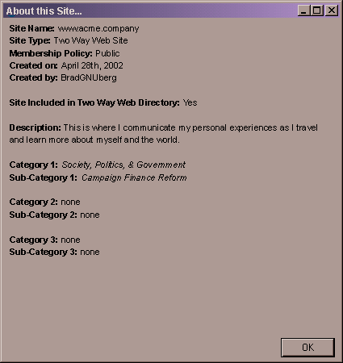

| | |
Table of Contents | Last | Next
Browsing - About this Site...
To see the About this Site... dialog window choose the File pull-down menu and then select About this Site...
If you are a Member or a Non-Member of the current site, the following dialog will be shown:

About this Site... Dialog for Members and Non-Members
If you are a Manager of the current site, the following dialog will be shown instead:

About this Site...
For information on changing whether this site is listed in the Two Way Web Directory, what its description is, and what its category & sub-categories are see the following pages:
Note: The About this Site... feature is disabled for older Two Way Web Sites unless they support this feature.